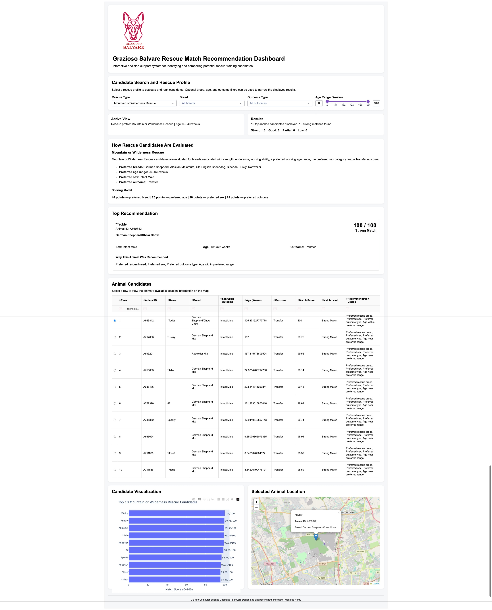

Artifact Overview
The artifact selected for the algorithms and data
structures enhancement is the Grazioso Salvare animal
rescue dashboard originally developed in CS 340:
Client/Server Development.
The application was created using Python, Dash,
Pandas, MongoDB, PyMongo, Plotly, and Dash Leaflet.
Its original purpose was to allow users to interact
with animal shelter records and identify animals that
could potentially satisfy specific rescue-training
requirements.
The original dashboard allowed users to filter animals
according to Water Rescue, Mountain or Wilderness
Rescue, and Disaster or Individual Tracking profiles.
Although this approach successfully identified matching
records, the selection process relied primarily on
predefined filters and treated animals as either
matching or not matching a rescue profile.
Enhanced Artifact
For Enhancement Two, I expanded the dashboard into a
more advanced Rescue Match Recommendation System.
Instead of simply returning matching records, the
application now uses algorithms and data structures to
efficiently identify, evaluate, score, and rank the
strongest rescue candidates.

Enhanced recommendation results showing ranked rescue
candidates and suitability scores.
Key Enhancement:
The original binary filtering process was expanded
into an algorithmic recommendation system using
dictionary indexes, sets, binary search, weighted
scoring, a bounded min-heap, and caching.
Weighted Recommendation Model
The recommendation engine evaluates candidates using
a total possible score of 100 points. Each criterion
contributes a different amount based on its importance
to the rescue-training profile.
|
Criterion
|
Maximum Points
|
Purpose
|
|
Breed Match
|
40
|
Gives the greatest weight to
breed characteristics associated
with the selected rescue role.
|
|
Age Match
|
25
|
Evaluates whether the candidate
falls within the preferred
training-age range.
|
|
Sex Match
|
20
|
Evaluates alignment with the
preferred sex criteria for the
rescue profile.
|
|
Outcome Match
|
15
|
Considers the candidate's
recorded shelter outcome.
|
The recommendation engine also supplies explanatory
match reasons so that users can understand why an
animal received its score rather than treating the
recommendation process as a hidden calculation.
Algorithmic Efficiency
The enhancement allowed me to evaluate both the
theoretical and practical performance of the
recommendation process.
Dictionary Lookup
Average lookup complexity: O(1)
Dictionary indexes provide expected constant-time
access to candidate groups associated with normalized
breed, sex, and outcome values.
Binary Search
Range-boundary search: O(log n)
Binary search locates the boundaries of qualifying
age ranges within sorted age information.
Top-k Candidate Selection
Complete sorting: O(m log m)
Bounded min-heap: O(m log k)
In these expressions, m represents
the number of evaluated candidates and
k represents the number of top
recommendations requested.
Because the dashboard normally displays only a small
set of top recommendations, maintaining a bounded heap
avoids unnecessarily sorting every candidate when only
the strongest results are required.
Testing and Evaluation
Automated testing was used to evaluate both the
recommendation engine and its integration with the
dashboard.
The recommendation-engine test suite included tests
for dictionary-index construction, profile
normalization, mixed-breed matching, set operations,
binary-search age boundaries, weighted scoring,
partial age credit, bounded min-heap ranking,
tie handling, result limits, caching, invalid input,
empty results, and protection of source records.
Testing Result:
After correcting the explicit-filter integration
issue, all 82 automated tests in the complete
application suite passed during Enhancement Two.
End-to-end testing also confirmed that recommendation
ranks began at one, scores appeared in descending
order, the strongest table result matched the
top-recommendation card, the visualization updated
with ranked results, and selecting a table record
continued to update the interactive map.
Artifact Files
The enhanced artifact demonstrates the implementation
of the algorithms and data structures used by the
Rescue Match Recommendation System.
Reflection Narrative
I selected the Grazioso Salvare Rescue Match
Recommendation System for the algorithms and data
structures category because it provides a practical
example of how the organization of data and the
selection of appropriate algorithms can improve a
working software application.
The original dashboard already contained a realistic
problem involving the evaluation of animal records
according to several criteria. However, the original
rescue-selection process primarily relied on
predefined filters and repeated filtering operations.
Animals were generally treated as either matching or
not matching a rescue category.
The primary goal of this enhancement was to move
beyond simple filtering and create a recommendation
process capable of identifying the strongest rescue
candidates. I implemented dictionary-based indexes,
sets, sorted age data, binary search, weighted
scoring, a bounded min-heap priority queue, and
caching.
Dictionary indexes provide efficient access to
frequently requested candidate groups, while sets
support efficient intersection of multiple selection
criteria. Binary search allows qualifying age
boundaries to be located within sorted data without
requiring a complete sequential search.
Weighted scoring allows the application to evaluate
how closely each candidate matches the selected
rescue profile. A candidate can therefore be ranked
relative to other candidates instead of being treated
as only a yes-or-no match. The bounded min-heap
provides an efficient approach for maintaining the
strongest top candidates when the number of results
requested is much smaller than the number of records
evaluated.
One of the most important lessons I learned during
this enhancement was that no single data structure is
the best choice for every operation. Dictionaries and
sets improve lookup and intersection operations but
require additional memory. Sorted structures support
efficient binary search but introduce maintenance
considerations when the underlying data changes.
A heap is effective when only the strongest results
are required, while a full sort may still be more
appropriate when every record must be ranked.
Evaluating these trade-offs strengthened my
understanding of algorithm design. Performance cannot
be evaluated only by selecting the structure with the
lowest theoretical complexity. Readability,
maintainability, memory use, data size, update
frequency, and the actual requirements of the
application must also be considered.
Automated and end-to-end testing were also important
parts of this enhancement. Testing confirmed that the
algorithmic improvements produced correctly ranked
recommendations without removing the interactive
functionality of the original dashboard.
This enhancement most directly demonstrates my
ability to design and evaluate computing solutions
using algorithmic principles and computer science
practices. It also demonstrates my ability to apply
well-founded computing techniques to provide
practical value and communicate technical results
through understandable scores, explanations, tables,
charts, and other interface components.
Overall, the enhancement transformed the artifact from
a basic filtering dashboard into a
recommendation-oriented system capable of organizing
data efficiently, narrowing candidate groups,
evaluating suitability, and prioritizing the strongest
results for the user.